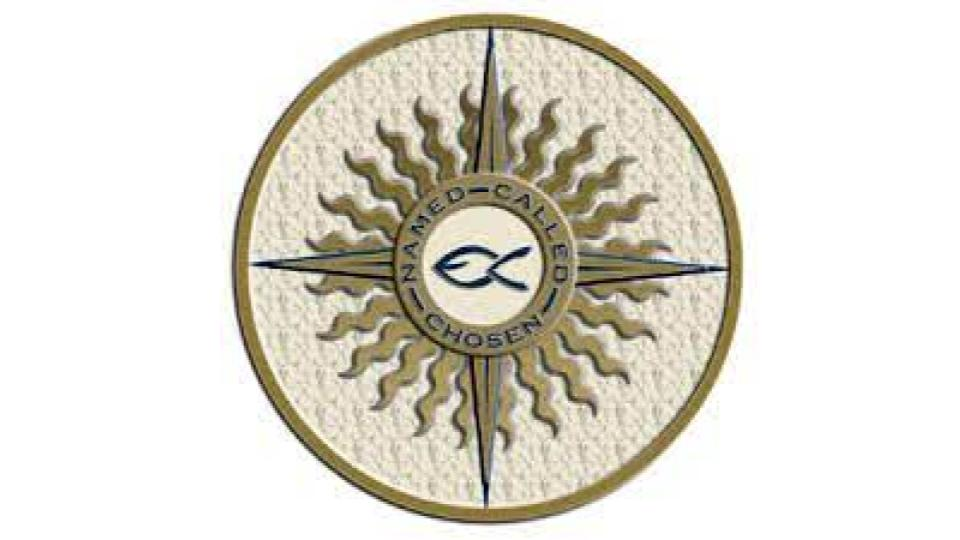

Hello viewers
My name is Rohan Jimson
And this is my portfolio webpage!
As a highly motivated and driven grade 9 student at St. Edmund Campion, I am currently enrolled in a business information communication technology course taught by the renowned Mrs. Williams Harvey. With a strong desire to broaden my understanding and proficiency in this specific field, I am actively seeking an apprenticeship opportunity. This portfolio serves as a comprehensive demonstration of my adaptiveness in utilizing various software applications, as well as showcasing my exemplary written and verbal communication skills, strong problem-solving abilities, and proficiency in creating visually appealing materials through programs such as publishing software, PowerPoint presentations, Wix, and the utilization of design concepts like Aida, Craap, and Whitespace. My dedication to continuous growth and expansion in the realm of business communication information technology is unwavering, and I am committed to pursuing further opportunities in this field


Center Aligned Image
Artifacts that Show My Skills
The first artifact I am presenting is a group project poster that reflects our ability to effectively collaborate with others and showcases our proficiency in editing to create an attractive poster that captivates audiences, compelling them to attend our company's upcoming picnic event as our topic. Through this project, we demonstrated our strong teamwork skills, attention to detail, and creativity in developing visually appealing and engaging promotional material. We worked together to brainstorm ideas, ensuring that everyone's input was valued and incorporated. Each of us played a role in meticulously designing the poster, ensuring all important information was easily readable and eye-catching.

The next artifact I am thrilled to present is a group project that showcases a meticulously crafted PowerPoint presentation. This project not only exhibits our exceptional creativity but also demonstrates our ability to conduct diligent research and comprehend complex information.Throughout the creation of this presentation, we thoroughly researched our topic, utilizing various online sources and search engines to ensure the accuracy and reliability of our information. This extensive research enabled us to develop a profound understanding of the subject matter and present it in an informed and engaging manner.Moreover, our strong communication skills were adeptly demonstrated throughout the presentation. We carefully organized the content, ensuring clear and concise sections that were supported by relevant examples, statistics, and expert quotes. Additionally, we paid meticulous attention to our visuals, incorporating captivating images, colors, and graphics to enthrall the audience and enhance the visual appeal of the presentation.
The third artifact I am eager to showcase is a comprehensive chart highlighting my excellent adaptability in efficiently using a diverse array of software applications. This chart not only demonstrates my proficiency in utilizing tools like Google Sheets and Microsoft Excel, but also showcases my problem-solving abilities. Additionally, it effectively showcases my capacity to calculate and analyze data, relating directly to the essential communication aspect of business communication information technology, as it presents data in a numerical form.

The fourth artifact I am thrilled to present is a meticulously crafted video tutorial on using the desktop publishing software called Paint 3D. This tutorial was a collaborative effort with my partner, Mateo Quintana, and we put our exceptional communication skills, problem-solving abilities, and proficiency in the software into making this tutorial a comprehensive and engaging learning experience. Through clear and concise explanations, we aimed to teach the audience about the fundamental concepts of Paint 3D, while showcasing our resourcefulness in overcoming technical obstacles and our adaptiveness in utilizing the software's extensive toolset. Overall, this video tutorial stands as a testament to our commitment to excellence and our passion for sharing knowledge and fostering creativity.
The fifth and final, but definitely not worst artifact I am eager to showcase is my magnificently designed, carefully crafted Wix website.Utilizing intriguing design elements such as AIDA, CRAAP, and whitespace, I have successfully captivated viewers and drawn their attention to the headphones I am promoting. Not only does my website provide detailed descriptions and information about the products, but it also highlights the company's integral role in business communication information technology. By seamlessly blending visual appeal, engaging content, and a seamless user experience, my website effectively communicates the value of the headphones and showcases the company's commitment to advancing communication technology.
Center Aligned Image
Reflections about my artifacts
This artifact, a group project poster, holds significant personal value as it represents a pivotal moment of growth in my skills and knowledge. It showcases my ability to collaborate effectively with team members, making it a strong testament to my teamwork skills and my capacity to work harmoniously towards a common goal. The artifact also highlights my proficiency in creating visually appealing promotional materials, demonstrating my attention to detail and creativity. As I move forward, this artifact will serve as a powerful example of my capabilities in the world of business, where effective collaboration and visually compelling marketing materials are highly sought after.
Additionally, this artifact aligns perfectly with the Catholic Graduate Expectations and Social Teachings. It reflects the values of solidarity and working together towards a better world, as it exemplifies my ability to contribute positively to a team and community. By showcasing my capacity to communicate effectively and collaborate, this artifact embodies the importance of these skills in community involvement, and professional settings. It serves as a reminder of the teachings of solidarity and the significance of working together to create a more inclusive and prosperous society.
This artifact, a meticulously crafted PowerPoint presentation, is an excellent representation of my skills and knowledge. Through thorough research and the ability to comprehend complex information, I was able to create a compelling and informative presentation. This showcases my ability to gather reliable information, analyze it, and present it in a clear and engaging manner. Moving forward, this artifact will greatly benefit me in various fields, especially in the world of business. The research and communication skills demonstrated in this presentation are transferable and essential in any professional setting. With the ability to conduct thorough research and effectively communicate ideas, I will be equipped to make informed decisions and convey information clearly, thus succeeding in the business world and beyond.Additionally, this artifact aligns with the Catholic Graduate Expectations and Social Teaching. The commitment to seeking truth, knowledge, and presenting information in an engaging manner exemplifies the expectation of being an informed and responsible citizen. The emphasis on effective communication found in this artifact also aligns with the Catholic Graduate Expectation of effective communication and collaboration. With the skills showcased in this presentation, I embody the values of the Catholic education system and will continue to uphold these expectations in my future endeavors.
The artifact I have chosen to reflect on is a comprehensive chart highlighting my adeptness in using various software applications, such as Google Sheets and Microsoft Excel. This artifact serves as an excellent example of my skills and knowledge due to its demonstration of adaptability, efficiency, and problem-solving abilities. As I progress in the business world, this artifact will be instrumental in showcasing my ability to analyze and present data effectively, essential for communication and decision-making in any organization. In connection to the Catholic Graduate Expectations, this artifact reflects my commitment to excellence, critical thinking, and ethical use of technology for the betterment of the community. It exemplifies my dedication to being an effective communicator and a collaborative contributor to the common good, aligning with the social teaching principles of solidarity and stewardship.this chart not only showcases my proficiency in using software applications but also reflects my commitment to ethical and impactful use of technology, making it a valuable asset as I continue to advance in the world of business and beyond.
The creation of the video tutorial on using Paint 3D exemplifies my proficiency in desktop publishing software and my ability to effectively communicate complex concepts. By providing clear and concise explanations, my partner and I aimed to teach the audience about the fundamental concepts of Paint 3D, showcasing our commitment to excellence and passion for sharing knowledge. Additionally, the collaborative nature of the project highlighted our ability to work effectively in a team, demonstrating our capacity for collaboration and communication, which are essential skills in any professional setting. Furthermore, the tutorial's demonstration of problem-solving and adaptability in overcoming technical obstacles speaks to our resourcefulness and creativity in the face of challenges, qualities that will undoubtedly serve me well as I move forward, whether in the world of business or otherwise.In connection to the Catholic Graduate Expectations and Social Teaching, the creation of the tutorial aligns with the expectation of being an effective communicator, a reflective and creative thinker, and a collaborative contributor. It embodies the principles of social justice and the promotion of the common good, as it aims to foster creativity and knowledge sharing for the benefit of others. This endeavor demonstrates my dedication to personal and academic excellence, as well as my commitment to contributing to the betterment of society through the sharing of knowledge and skills.
My meticulously designed Wix website exemplifies my expertise in digital marketing and communication, showcasing the effective use of design principles like AIDA, CRAAP, and whitespace to promote headphones. The website not only provides detailed descriptions and information about the products but also highlights the company's integral role in advancing communication technology. By seamlessly blending visual appeal, engaging content, and a user-friendly experience, I have successfully captivated viewers and drawn their attention to the promoted headphones. As I move forward, this artifact will be invaluable in my future endeavors, providing a strong foundation for success in the world of business and beyond. The skills and knowledge demonstrated in designing this website will serve me well in various aspects of my professional and personal life, particularly in digital marketing and the business communication technology field in general. Moreover, the website reflects my alignment with the Catholic Graduate Expectations and the Social Teaching by promoting responsible consumerism, ethical communication, and the advancement of technology for the common good.